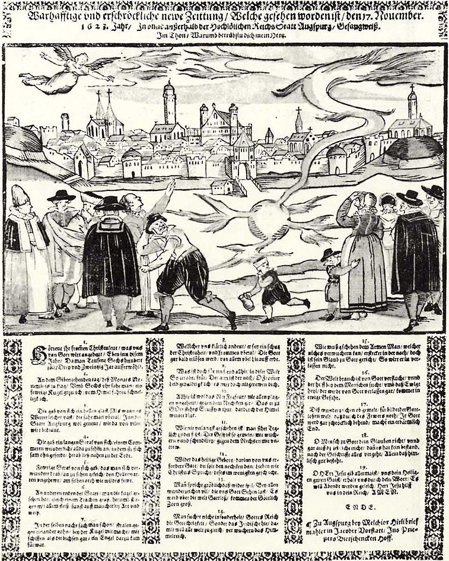

À Strasbourg, pluie
rougeElias Habrecht, Mémoire imprimé à Strasbourg, 1623 < "M. Chladni's New Catalogue of
Aerolites", Annals of Philosophy, New Series 12:93, juillet à décembre 1826.
Illustration de la "boule de feu" observée à Augsburg le 17 novembre, avec le texte de la
chanson relatant l'événement

À Augsburg (Allemagne), observation d'une boule de feuWarhafftige und erschroeckliche newe Zeittung / Welche gesehen worden ist / den 17. November. 1623. Jahr / In unnd ansserhalb der Hochloelichen Reichs Stadtt Augspurg / Gesangweiss. Imprimé à Augsburg par Melchior Hirli, 1623. L'original est à la Staats- und Stadtbibliothek d'Augsburg sous la côte BV017483698 < Deliyannis, Y.: "Re: Foudre en boule médiévale?", courrier au site, 24 mars 2008Kepler aurait écrit qu'un globe brûlant apparut au coucher du soleil
(...). Il fut visible en différents endroits dans toute l'Allemagne. En Autriche, il
est affirmé qu'il a émis un son de craquement ou d'écrasement, comme venant d'un coup de tonnerre, ce que,
cependant, je considère sans fondementTransit, Daniel: "A List of Sightings by Astronomers", UFO Base, 2 septembre 2004 .
Le dernier dimanche du mois En Ecosse, apparition comme un arc-en-ciel à l'ouest, la Lune brillant clairement à l'est, avec de la pluie en
même temps, ce qui intrigue grand monde Thomson, Thomas (révérend), "A Strange Meteore", edité à partir du original manuscript preservé au British Museum, vol. 7, Edinburgh, 1845 < Calderwood, David: The History of the Kirk of Scotland.
Depuis toute l'Allemagne, observation de ce qui semble être aurore boréale Jeremiah, 3 ; Nature 46-47, 1870 - citant Kepler < Silverman, Sam: "Auroral Annotations".